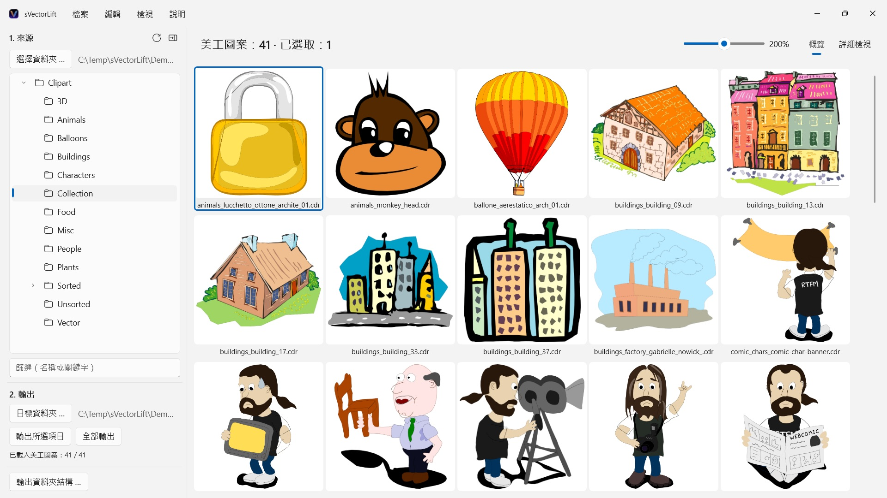
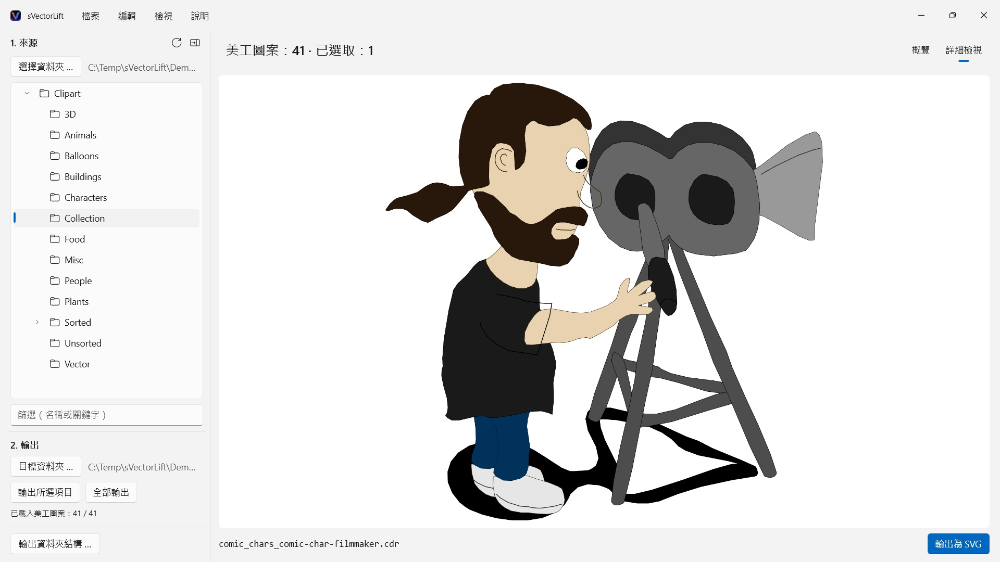

CorelDRAW 光碟上成千上萬張復古美工圖案，被鎖在幾乎沒有程式還打得開的檔案格式裡。sVectorLift 讓你一眼看遍整個收藏，並把它們變成今天就能用的真正 SVG。
 觀看影片 – YouTube 上 3 分鐘（英語，中文字幕）
觀看影片 – YouTube 上 3 分鐘（英語，中文字幕）


書架上的某個角落，放著一張多年前買下的美工圖案光碟。檔案都還在，可是電腦上幾乎沒有程式還打得開，能讓你一眼看遍整個收藏的就更少了。
支援的語言（25）：Deutsch · English · Español · Français · Italiano · Nederlands · Português (Brasil) · Português (Portugal) · Svenska · Norsk · Suomi · Polski · Čeština · Hrvatski · Magyar · Română · Türkçe · Русский · Українська · فارسی · ไทย · 日本語 · 한국어 · 简体中文 · 繁體中文
App 會依照 Windows 的顯示語言。
sVectorLift 讓這些圖重新派上用場。它把每一幅圖重新建構為真正的 SVG：任何尺寸都清晰、可編輯，可以直接用在 Illustrator、Affinity、Inkscape、Figma 裡，或者放到你的網站上。不只是又看得見，而是又用得上。這就是名字裡「lift」的意思：把復古的向量圖，提到你今天所用工具的水準上。
它能打開什麼
- CorelDRAW 文件（.cdr），第 6 版至第 9 版
- Corel Binary Meta File（.cmx）——包括其他工具拒絕讀取的早期 CDRX
- Windows Metafile（.wmf）
- Computer Graphics Metafile（.cgm）
- QuickDraw 3D Metafile（.3dm、.3dmf），算圖為影像
- Scalable Vector Graphics（.svg），直接顯示
許多副檔名為 .cdr 的檔案其實並不是 CorelDRAW 文件，而是 CMX——常見的轉換器正是栽在這裡。sVectorLift 兩者都讀。
sVectorLift 是為美工圖案收藏而做的：圖樣、符號、插圖。它不是排版軟體，也無意重現多頁手冊或印刷稿。
真正的向量轉換
這裡不是把預覽縮圖翻拍一遍。sVectorLift 讀的是圖本身：路徑與貝茲曲線、填色、漸層、外框與虛線樣式、圖樣與紋理填充、內嵌照片以及文字物件。出來的是真正的向量資料，可以縮放、改色、編輯，而不是一張圖的照片。
純點陣圖則輸出為 PNG，這樣什麼都不會遺失。
需要的不是向量圖而是影像？「輸出為 PNG」和「輸出為 JPG」可將任何圖（包括 SVG 檔案）算圖為影像，尺寸就是你在「設定」中指定的大小。
瀏覽你的收藏
- 涵蓋整個收藏的資料夾樹狀結構，含子資料夾
- 清晰向量縮圖的格狀排列，大小可用滑桿無段調整
- 詳細檢視——用方向鍵在資料夾裡翻看
- 依名稱或關鍵字篩選
- 與檔案總管一樣的多重選取：按一下、Ctrl+按一下、Shift+按一下、框選、Ctrl+A
- 從檔案總管直接開啟單一檔案（「開啟檔案」或按兩下）
- 最近使用的資料夾會記住你停下的位置：子資料夾和選取的檔案
- 一步輸出所選項目或整個資料夾
- 一次轉換整個資料夾結構（含子資料夾）——目標資料夾中保留原有結構
- 重新命名、在檔案總管中顯示、移到資源回收筒
- 拖放到資料夾樹狀結構中的資料夾來整理收藏：依照檔案總管的規則，按住 Ctrl 複製，按住 Shift 搬移，可用 Ctrl+Z 復原；也可與檔案總管互相拖放
又快又省心
縮圖只為你正在看的內容計算，在背景進行並帶快取。大資料夾立刻打開，而不是先卡上幾分鐘去處理成千上萬個檔案。
一切都留在你的電腦上。沒有網路連線，沒有帳號，不收集資料。
CorelDRAW 是 Corel Corporation 的商標。sVectorLift 是獨立 App，與 Corel 無從屬關係，也未獲其背書。
- 需要 Windows 11 或以上版本
- 支援 24 種語言
- 技術支援： SwiftAppsBavaria@gmx.net
- 隱私權政策